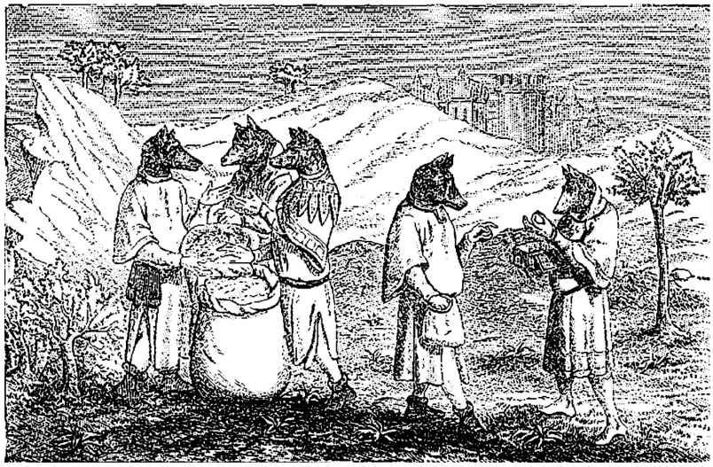

欧洲的海外扩张和陆上扩张的第一个最明显的结果是，人类的眼界前所未有地扩大了。地理知识不再局限于一个地区、一块大陆或半球。整个地球的形状首次被了解和绘入地图（见地图22）。这项工作主要是由带头从事越洋探险的西欧人进行的。在葡萄牙人于15世纪初开始沿非洲海岸摸索前进以前，欧洲人仅掌握有关北非和中东的准确知识。他们关于印度的知识是模糊的；关于中亚、东亚和撒哈拉以南非洲的知识则更模糊。美洲和澳大利亚的真实存在当然是未曾料想到的，更不用说南极洲的存在了。
但到1763年，情况已全然不同。世界大部分地区的主要海岸线，包括美洲的大西洋岸、南美洲的太平洋岸、整个非洲的海岸轮廓以及南亚和东亚的海岸，都已详细程度不等地为人们所了解。在某些地区，欧洲人的知识已超出海岸线的范围。俄罗斯人相当熟悉西伯利亚，西班牙人和葡萄牙人相当熟悉墨西哥、中美洲和南美洲的部分地区。在格兰德河的北面，西班牙人已勘探了很多地区，徒然地寻找黄金和传说中的城市，而法国人和英国人则利用独木舟和印第安人所知道的河流和湖泊路线，在更北面的地区广泛地漫游。

图167 狗人。根据马可·波罗的报告中对安达曼群岛居民的描绘，这些人的头、眼睛和牙齿长得“像狗的一样”。
不过在另一方面，北美洲的太平洋海岸大半仍未探明；澳大利亚虽然其西海岸已被荷兰航海者发现，但整体上也几乎尚未为人们所了解。同样，撒哈拉以南的非洲内地基本上仍是块空白；中亚的情况也一样，13世纪马可·波罗的记叙仍是关于中亚的知识的主要来源。总的来说，欧洲人在直至1763年为止的这一时期中，已获得有关世界大部分海岸线的知识。在下一时期中，他们将侵入几块大陆的内地，还将探察南、北极地区。